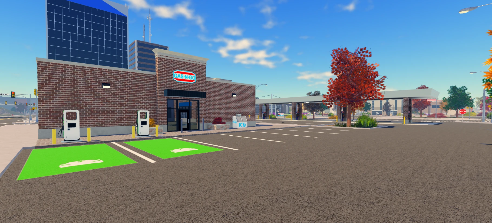
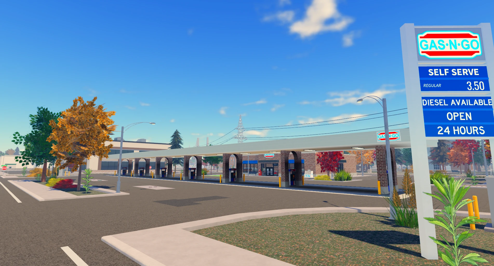
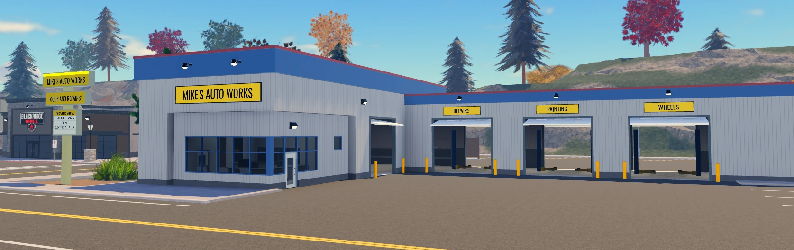
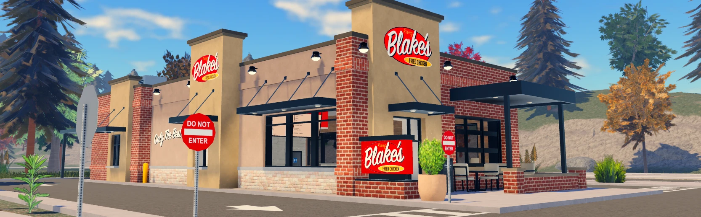
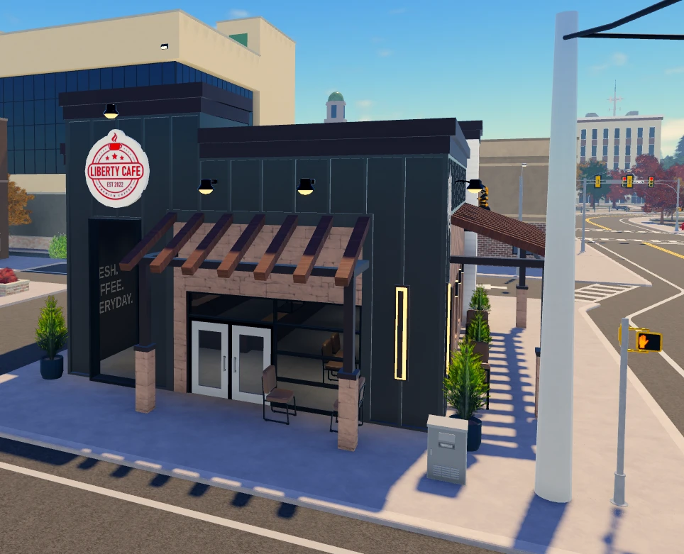

ER:LC · Comunidad de rol en español
Ibiza Roleplay
Rol serio en una isla con ley, trabajo, casa y negocio propios. Hecho en España, jugado en ER:LC.
- 87Viviendas
- 15Tipos de negocio
- 3Cuerpos de emergencia
- 10Trabajos con sueldo
Empezar
Cómo unirse
Tres pasos, todo desde Discord. En unos minutos tienes tu personaje listo.
- 01
Entra al Discord
Únete al servidor y lee las normas antes de nada.
- 02
Verifica tu cuenta
Escribe
/verificary vincula tu cuenta de Roblox. - 03
Crea tu DNI
Escribe
/crear-dniy expide el documento de tu personaje.
El servidor
Qué hay dentro
No es solo un servidor de patrullas: hay economía, propiedades y herramientas propias en la web.
Emergencias
Avisos con el mapa en directo y los terminales de Guardia Civil, SAMU y Bombers.
Abrir RolConsola
Acciones de rol, historial por zonas y llamadas al 911 desde el móvil o el ordenador.
AbrirEmpresas y locales
Monta tu negocio en un local real del mapa, contrata gente, factura y paga nóminas.
Viviendas
87 casas que se compran, se alquilan o se venden entre jugadores.
Banco y préstamos
Efectivo, tarjeta, transferencias y préstamos sin intereses con cuotas semanales.
Multas y juzgado
Multas con descuento por pronto pago, requisitorias y un sistema judicial con jueces y fiscales.
Capturas
Así se ve Ibiza
Los locales, calles y rincones donde se juega.






Descubre más
Antes de entrar
Conoce a la gente detrás del servidor, cómo se juega de verdad y qué hacer si te han baneado.
Dudas
Preguntas frecuentes
¿Necesito una cuenta de Roblox?
Sí. La verificación vincula tu cuenta de Discord con tu cuenta de Roblox, y es lo que te permite jugar y usar la economía.
¿Puedo tener más de un personaje?
Solo uno por persona. Para empezar con otro personaje, el staff tiene que hacerte un CK (muerte de personaje).
¿Cómo entro al CAD, a los MDT y a la Consola?
Escribe /consola codigo en Discord, pulsa el botón que te sale y se abre con tu acceso. Los MDT de cada cuerpo solo los abren quienes tienen ese trabajo.
¿Dónde se juega?
En un servidor privado de ER:LC (Emergency Response: Liberty County), dentro de Roblox. El Discord es el centro de todo lo demás.